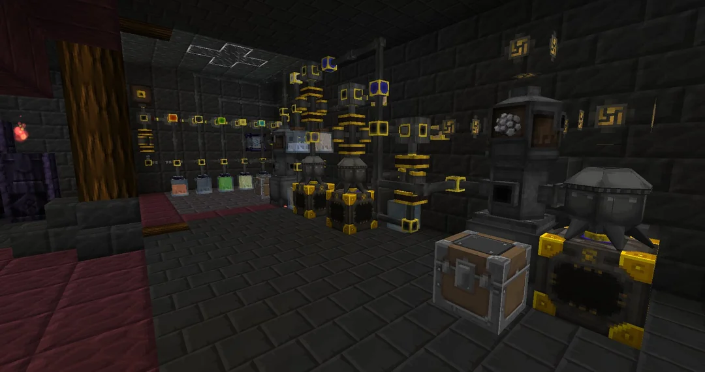
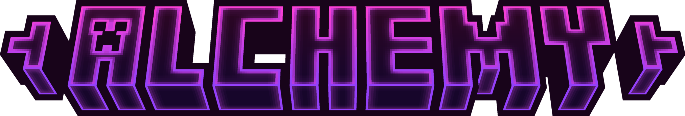
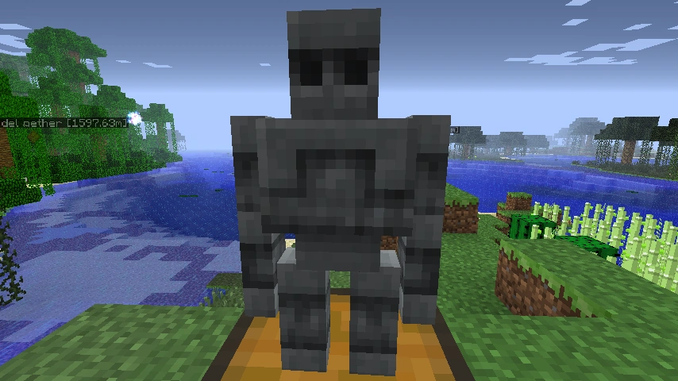
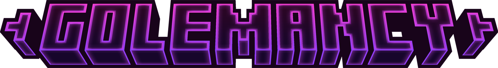
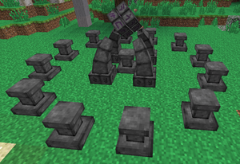
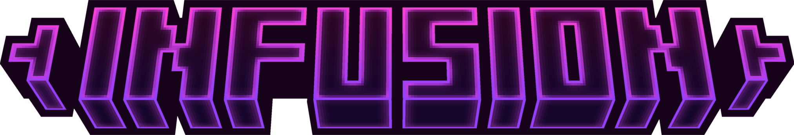
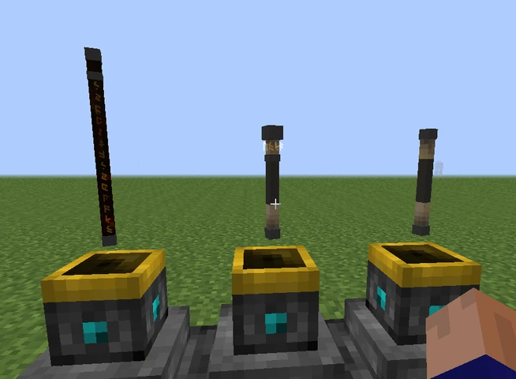
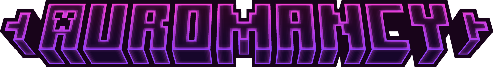
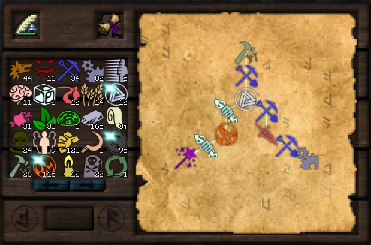
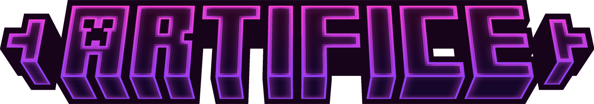

Basic Alchemy an introductory research found under the Alchemy tab that serves as an introduction to Alchemy as a whole and how to conduct Alchemy.
It also details the creation of Balanced Shards and Salis Mundus, both found under the Vis Shards page, and of the creation of a Crucible, to which a description of Alchemy and how to create the Crucible can be found.
Basic Alchemy also details the creation of the Morphic Resonator and Essentia Filter, both crafting components used in many different recipes.
The Essentia Filter is a crafting component created at an Arcane Workbench with 2 gold ingots in any of the side right sections in a horizontal line with Silverwood planks in the center along with 15 Ordo and Aqua Vis.
Although the Essentia Filter has no inherent use of its own, it has many uses in Alchemy, being used in the creation of almost everything dealing with the movement and creation of Essentia.
 Golems are crafted humanoid creations from Thaumcraft 3 that can do various jobs. Currently you must discover Golemancy in your Research Table before you can craft Wood Golems, and every other golem type must have their respective theory researched.
They are Thaumcraft's method of automating certain tedious tasks and whilst they can make their way through gates and wooden doors other entry means such as iron and warded doors will prevent their egress giving a frustrated thaumaturge a means by which to prevent golem intrusion into restricted areas.
Right clicking any golem with a Wand containing Vis will turn them back into an item.
Upgraded cores can be researched and then crafted INSTEAD of the normal core in the crafting recipe of the golem, there is no way to upgrade an existing golem. Each core is made by crafting the basic core with a shard.
 The Infusion Altar is a multiblock structure added by Thaumcraft 6. It is used to craft items through infusion.
Right-click on the resulting structure with Salis Mundus to transform it into the Infusion Altar.
Before starting any infusion the player should always make sure that they have more than enough essentia to complete the infusion and spare prerequisite items should they be destroyed during the process. Easily mined blocks such as Dirt or Cobblestone should be kept on hand in the event Flux Goo manifests.
Once ready, right-click on the Runic Matrix to begin the infusion. If the player is looking at the Runic Matrix while wearing the Goggles of Revealing or similar headwear, they will be able to see the amounts of essentia still required for the infusion.
 The "Thaumaturgy" page of the Thaumonomicon covers wands, and all their variations and accessories. Wands are constructed from a wand core and two wand caps. Later, they can be equipped with wand foci to expand their abilities. There are also many related devices, from Wand Recharge Pedestal to the Focus Pouch.
A wand is the most basic magical tool of a thaumaturge -- indeed, the section of the Thaumonomicon dealing with wands and related magics, is simply titled "Thaumaturgy". Wands and their variations gather all normally begin with an iron-capped wooden wand. The only virtue of this crude tool is that it can be crafted on the vanilla crafting table, with no magical tools needed.
This first wand is not only inefficient, but offers a risk of damaging the nodes upon which a thaumaturge depends for vis. At the first opportunity, a player should replace their wand with a gold-capped greatwood wand, and discard the iron/wood one. By this point, the player should also have mastered the "Node Preserver" ability, so that their own abilities will back up the potential of their tools.
 Artifice is a research tab in the Thaumonomicon containing information relating to the creation of new objects through Infusion, or, on occasion, Arcane Crafting, and contains some of the most useful and powerful items in the game, such as Runic Shielding.
Goggles of Revealing are a research option found under the Artifice tab that is inherently available for research. After researching it, it allows for the creation of the Goggles of Revealing, which act like a wearable Thaumometer.
The Goggles of Revealing lack the ability to scan items, but in return can see Aura nodes from a greater distance, see magical information that would otherwise be hidden, even with a Thaumometer, and check the aspects in a node similarly to how one would with a Thaumometer.
The Goggles of Revealing can be crafted at an Arcane Workbench with 4 leather in the top and middle left and right sections, 2 Brass in the top and bottom middle sections and 2 Thaumometers in the bottom left and right section, along with 25 of each type of Vis.
 